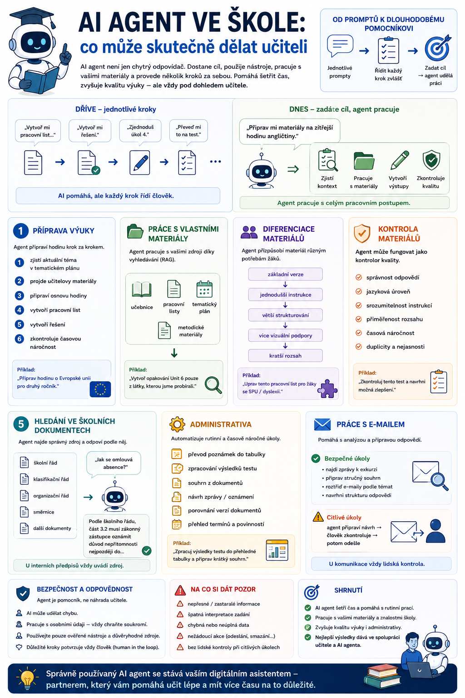

O AI agentech se často mluví velmi obecně: plánují, používají nástroje, pracují s pamětí a zvládají několik kroků za sebou. Pro učitele je ale důležitější jiná otázka. Co z toho může být skutečně užitečné ve škole? A kde už začínají problémy s bezpečností, odpovědností a osobními údaji?

Od jednotlivých promptů k dlouhodobému pomocníkovi
Běžné používání AI při výuce často vypadá takto:
„Vytvoř mi pracovní list na předpřítomný čas.“
O několik minut později:
„Vytvoř mi řešení.“
Potom:
„Zjednoduš úkol číslo 4.“
A následně:
„Převeď mi to na test.“
AI pomáhá, ale každý krok musí řídit člověk.
Agentní systém může pracovat jinak.
Učitel zadá cíl:
„Připrav mi materiály na zítřejší hodinu angličtiny.“
Agent může zjistit:
- kterou třídu učitel má,
- jaké téma je právě v tematickém plánu,
- jaké materiály používá,
- jaká je úroveň žáků,
- jak dlouhá je hodina.
Potom připraví vhodný výstup a provede kontrolu.
Rozdíl tedy není jen v kvalitě textu.
Rozdíl je v tom, že AI může začít pracovat s celým pracovním postupem.
1. Příprava výuky
To je asi nejpřirozenější oblast.
Agent může například dostat zadání:
„Připrav mi hodinu o Evropské unii pro druhý ročník.“
A postupovat:
- zjistí aktuální téma,
- projde učitelovy materiály,
- připraví osnovu hodiny,
- vytvoří pracovní list,
- vytvoří řešení,
- zkontroluje časovou náročnost.
Pokud má k dispozici tematický plán a učitelovy zdroje, nemusí každý materiál vznikat úplně od začátku.
2. Práce s vlastními materiály
Tohle je pro školství mimořádně důležité.
Obecný chatbot zná obecné informace.
Učitel ale často potřebuje, aby AI pracovala podle:
- konkrétní učebnice,
- vlastních pracovních listů,
- tematického plánu,
- metodických materiálů,
- školního kurikula.
Pomocí RAG nebo jiného vyhledávání může agent nejprve najít relevantní zdroje a teprve potom vytvořit nový materiál.
Například:
„Připrav opakování Unit 6 pouze z látky, kterou jsme skutečně probírali.“
Agent může zjistit, co do Unit 6 patří, načíst odpovídající podklady a vytvořit cvičení podle nich.
To je mnohem přesnější než obyčejné:
„Vymysli nějaké cvičení na Unit 6.“
3. Diferenciace materiálů
Další zajímavou oblastí je přizpůsobení výstupů různým potřebám.
Učitel může mít jeden základní pracovní list a agent z něj připraví další varianty.
Agent tedy nemusí pokaždé vytvářet nový materiál od nuly.
Může transformovat již hotový podklad podle zadaných pravidel.
4. Kontrola materiálů
Agent nemusí být jen tvůrce.
Může fungovat také jako kontrolor.
Například dostane hotový pracovní list a zkontroluje:
- správnost odpovědí,
- jazykovou úroveň,
- srozumitelnost instrukcí,
- přiměřenost rozsahu,
- časovou náročnost,
- duplicity,
- případné nejasnosti.
To je velmi praktický příklad rozdělení rolí.
Jeden systém materiál vytvoří.
Druhý jej zkontroluje.
A učitel provede finální kontrolu před použitím.
5. Hledání ve školních dokumentech
Učitelé tráví překvapivě mnoho času hledáním informací.
Například:
- Jak je to s omlouváním absence?
- Co přesně stanovuje klasifikační řád?
- Jaký je postup při neklasifikaci?
- Kde máme pravidla pro používání mobilů?
Agent připojený ke školním dokumentům může nejprve najít správný zdroj a následně odpovědět.
Ideální výstup není:
Myslím, že pravidlo je…
ale:
Podle dokumentu X, část Y…
U interních předpisů je možnost zobrazit zdroj zásadní.
6. Administrativa
Tady začíná být agentní AI opravdu zajímavá.
Velká část práce učitele není samotná výuka.
Je to:
Agent může například:
- převést poznámky do tabulky,
- zpracovat výsledky testu,
- vytvořit souhrn z dokumentů,
- připravit návrh zprávy,
- porovnat dvě verze směrnice,
- vytvořit přehled termínů.
To jsou přesně úkoly, kde může automatizace ušetřit mnoho času bez toho, aby AI rozhodovala místo učitele.
7. Práce s e-mailem
Agent může například pomoci s běžnou komunikací.
Učitel zadá:
„Najdi zprávy týkající se exkurze a připrav mi stručný souhrn.“
To je relativně bezpečný úkol.
Jiná situace je:
„Odpověz všem rodičům.“
Tady už by měl systém pracovat opatrněji.
Rozumný model je:
U komunikace je lidská kontrola stále velmi důležitá.
8. Kalendář a plánování
Agent může také pomáhat při plánování.
Například:
- „Najdi mi tento týden dvě volné hodiny na opravu písemek.“
- „Připomeň mi, že musím před pedagogickou radou dokončit klasifikaci.“
Při napojení na kalendář může zjistit skutečnou dostupnost.
Tady už se agentní AI velmi přirozeně propojuje s běžným digitálním pracovním prostředím.
9. Tvorba testů a hodnocení
AI může připravovat:
- otázky,
- varianty testu,
- řešení,
- bodování,
- jednoduché hodnoticí rubriky.
Ale tady bych byla opatrná s myšlenkou:
„AI automaticky oznámkuje žáky.“
To už je jiná kategorie.
Pomoci učiteli s přípravou podkladů je jedna věc.
Provádět automatizované hodnocení žáka s reálnými důsledky je věc druhá.
U výsledné klasifikace musí odpovědnost zůstat na učiteli.
10. Agent jako učitelský kokpit
Pokročilejší varianta už nemusí znamenat jen několik izolovaných funkcí.
Učitel může mít jednoho hlavního asistenta, který ví:
- jaký má rozvrh,
- co se učí v jednotlivých třídách,
- jaké materiály používá,
- co je potřeba připravit,
- jaké úkoly čekají.
Ráno může například nabídnout:
Pro 2A máte připravený pracovní list.
U 3B jste minule skončili u tématu X.
Pro 1C ještě chybí materiál.
To už je úplně jiný typ práce než běžný chatbot.
Je to skutečný pracovní agent.
Tři zóny použití
Ve škole bych agentní systémy rozdělila do tří velmi jednoduchých kategorií.
Zelená zóna
Úkoly s nízkým rizikem.
Agent může pracovat poměrně samostatně.
Například:
- návrh pracovního listu,
- shrnutí veřejného dokumentu,
- tvorba osnovy,
- formátování textu,
- příprava tabulky,
- hledání ve výukových materiálech.
Žlutá zóna
Agent může připravit výstup, ale člověk jej musí před použitím zkontrolovat.
Například:
- komunikace s rodiči,
- hodnocení žákovských prací,
- práce s interními dokumenty,
- přizpůsobování výuky konkrétním skupinám,
- změny v kalendáři,
- odesílání dokumentů.
Zde je vhodný princip:
Červená zóna
Sem bych AI agenta bez velmi dobře navrženého systému nepouštěla vůbec.
Například:
- automatické rozhodování o známkách,
- automatické kázeňské rozhodování,
- odesílání citlivých údajů,
- mazání důležitých školních dat,
- přístup k celým databázím žáků bez jasné potřeby,
- samostatné rozhodování o podpůrných opatřeních.
Čím větší dopad může mít chyba na konkrétního člověka, tím menší by měla být autonomie AI.
Ne všechna data patří do AI
Tohle je ve škole zásadní.
Učitel pracuje s velmi různými typy dat.
Například:
má jiné riziko než:
seznam žáků s osobními údaji
a ten zase jiné než:
zdravotní nebo speciálně pedagogické informace
AI agent by proto neměl mít přístup k úplně všemu jen proto, že by to bylo pohodlné.
Platí:
Minimální množství dat
Při návrhu školního agenta je dobré se ptát:
Potřebuje agent skutečně znát jméno žáka?
Možná mu stačí:
Žák 17 potřebuje jednodušší instrukce a delší čas.
Pokud ke splnění úkolu nepotřebuje identitu, není důvod ji předávat.
To je velmi praktická ukázka principu minimalizace dat.
Human in the loop
U školních agentů bych tento princip považovala za základní.
Agent může:
Člověk by měl rozhodovat tam, kde vzniká:
- odpovědnost,
- právní důsledek,
- hodnocení člověka,
- práce s citlivými údaji,
- komunikace navenek.
Nejde o nedůvěru k AI.
Je to prostě rozumné rozdělení rolí.
AI agent není digitální ředitel
Čím více schopností agent dostane, tím snazší je začít mu přisuzovat příliš velkou autoritu.
Ale agent nezná všechny souvislosti školy.
Nemusí chápat:
- vztahy ve třídě,
- rodinnou situaci,
- dlouhodobý vývoj žáka,
- neformální kontext,
- pedagogické důvody určitého rozhodnutí.
To jsou oblasti, kde je lidský úsudek nenahraditelný.
Agent může připravit podklady.
Rozhodnutí je na člověku.
Agent jako pomocník, ne náhrada učitele
Tohle je asi nejlepší způsob, jak se na celé téma dívat.
Dobrý školní agent by měl především odstraňovat práci, kterou učitel musí dělat, ale nepotřebuje kvůli ní být učitelem.
Například:
Ušetřený čas pak může člověk věnovat tomu, kde je skutečně potřeba:
Praktický příklad: příprava jedné hodiny
Představme si učitele, který zadá:
„Připrav mi zítřejší hodinu angličtiny pro 2B.“
1. Zkontrolovat rozvrh
Agent zjistí, že hodina trvá 45 minut.
2. Zjistit aktuální téma
Z tematického plánu zjistí:
3. Najít zdroje
Použije učebnici a předchozí materiály.
4. Připravit plán
Navrhne:
- 5 minut opakování,
- 10 minut vysvětlení,
- 15 minut pracovní list,
- 10 minut komunikace,
- 5 minut kontrola.
5. Vytvořit pracovní list
Připraví žákovskou verzi.
6. Připravit řešení
Vytvoří učitelskou verzi.
7. Zkontrolovat materiál
Ověří:
- úroveň,
- gramatickou správnost,
- časovou náročnost.
8. Předložit učiteli
Učitel výsledek zkontroluje.
Tady už dobře vidíme všechny předchozí články v praxi:
A co multi-agentní systém?
Ještě pokročilejší varianta může mít několik rolí.
- Agent 1 – příprava obsahu: vytvoří pracovní list.
- Agent 2 – metodická kontrola: zkontroluje přiměřenost.
- Agent 3 – jazyková kontrola: ověří angličtinu.
- Agent 4 – kontrola přístupnosti: ověří, zda jsou instrukce srozumitelné.
Výsledek potom dostane učitel.
Ale znovu platí:
Pokud to dobře zvládne jeden systém, není nutné stavět celý digitální kabinet o patnácti agentech.
Co by měl školní agent umět vysvětlit
Dobrý agent by neměl pouze něco udělat.
Měl by být schopný také říct:
- Co udělal?
- Z jakých zdrojů vycházel?
- Co změnil?
- Kde si není jistý?
- Které kroky vyžadují kontrolu?
To je důležité pro důvěryhodnost systému.
U agenta, který pouze oznámí:
Hotovo.
ale nikdo netuší, co vlastně provedl, bych byla velmi opatrná.
Agentní AI nebude fungovat bez dobrých dat
Škola může mít nejmodernějšího AI agenta na světě.
Pokud jsou ale její dokumenty:
agent bude mít problém.
AI velmi rychle odhalí starý dobrý problém digitalizace:
nepořádek v datech zůstává nepořádkem, i když nad něj postavíme chytrý model.
Agent není kouzelník na špatnou správu dokumentů.
Nejprve proces, potom agent
Tohle je jedno z nejdůležitějších pravidel.
Nejdřív bych se ptala:
- Jak tento proces dnes funguje?
- Které kroky jsou opakované?
- Kde vznikají chyby?
- Kde člověk pouze přepisuje data?
- Kde musí rozhodovat pedagog?
A teprve potom:
Pokud je proces špatně navržený, agent ho může pouze zautomatizovat špatně a rychleji.
To opravdu není pokrok.
Začněte malým agentem
Pokud chce škola nebo učitel s agentní AI začít, není potřeba okamžitě stavět systém připojený k celé školní infrastruktuře.
Mnohem rozumnější je začít například:
- agentem pro tvorbu pracovních listů,
- nebo agentem pro vyhledávání ve školních dokumentech.
Teprve když funguje spolehlivě, lze přidávat další schopnosti.
Dobrá agentní architektura vzniká postupně.
Zapamatujte si
AI agent může učiteli pomáhat s:
Jeho největší přínos není v tom, že „nahradí učitele“.
Je v tom, že může převzít část:
Ve škole ale musí platit několik základních pravidel:
A úplně nejdůležitější pravidlo:
AI agent má pomáhat učiteli pracovat lépe. Nemá za učitele přebírat odpovědnost.